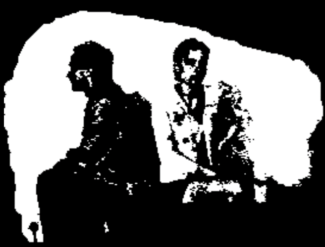
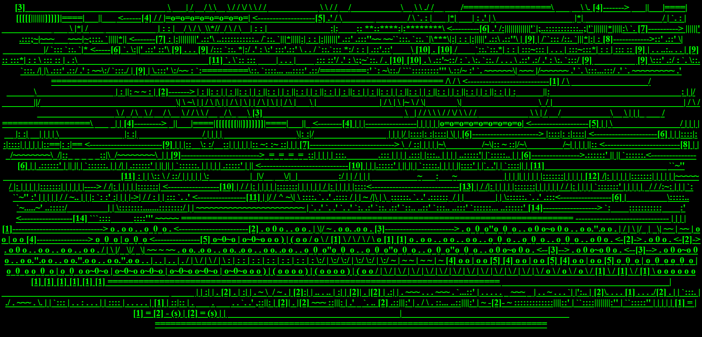
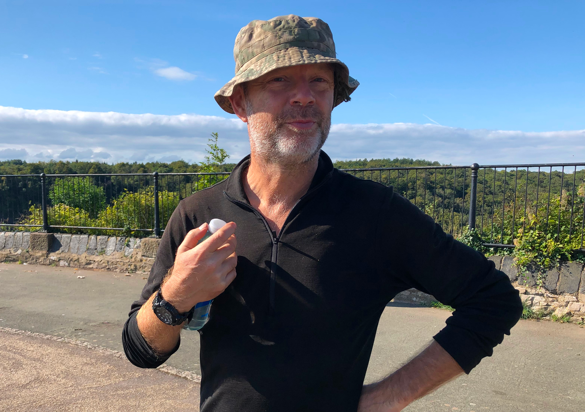
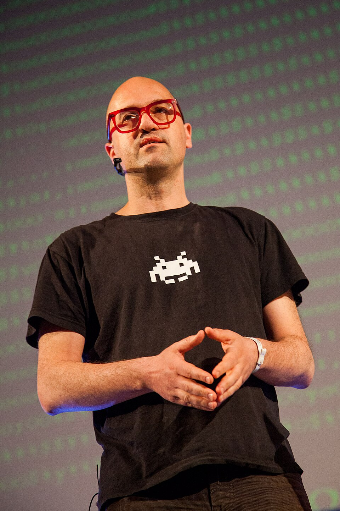
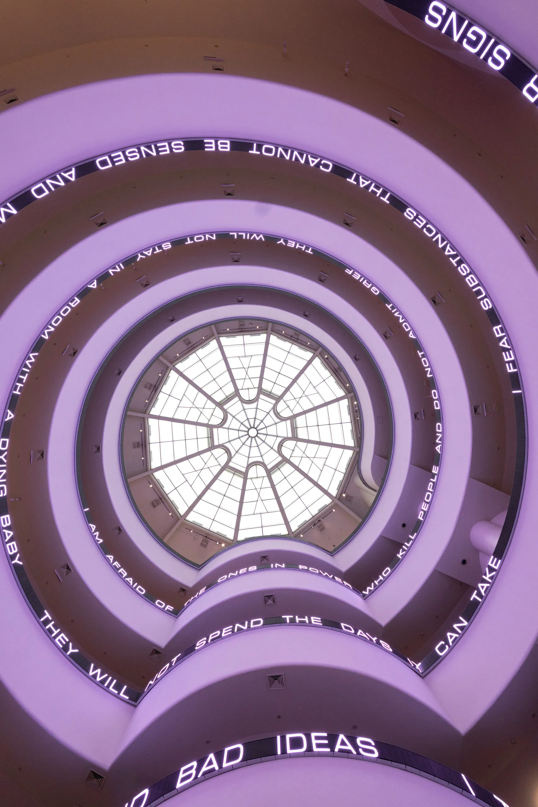

HISTORY OF WEB ART
Characteristics of Early Internet Art
-
Interactivity and Participation
- Early internet art required the viewer to become a participant, transforming passive browsing into active engagement. Works were often designed to be clicked, manipulated, or altered by the user, making the audience part of the creative process.
-
Immateriality and Virtual Existence
- Unlike traditional art, early internet art often existed only in the digital realm. It lived as code on servers, HTML documents, and browser windows rather than as a physical object in a gallery.
-
Networkability and Connectivity
- Internet art was often distributed through web browsers, hyperlinks, email lists, and online communities. The network allowed artists and audiences from different locations to participate in the same artistic environment.
-
Use of "Web 1.0" Aesthetics and Code
- Artists used the basic tools of the early internet as artistic materials, including HTML, browser frames, animated GIFs, hyperlinks, error messages, and primitive interfaces. JODI, for example, used browser errors and distorted code as part of their artwork.
-
Subversion of Institutions and Commercialism
- Early internet art often challenged traditional galleries, museums, and commercial art systems. Artists could distribute their work directly online without depending on conventional art institutions.
Early Web Artists 1990-2005
| WEB ARTIST | 150 CHARACTER DESCRIPTION OF WORK | LINKED THUMBNAIL |
|---|---|---|
| Olia Lialina | Her 1996 work My Boyfriend Came Back From the War uses frames and hyperlinks to create an interactive, fragmented digital narrative. |
 |
|
JODI Joan Heemskerk and Dirk Paesmans |
JODI creates chaotic websites using distorted code, errors, and confusing interfaces to challenge normal expectations of web browsing. |
 |
| Heath Bunting | Bunting explored identity, communication, and networks through early online projects that questioned how people connect and identify themselves on the web. |
 |
| Vuk Ćosić | Ćosić was an early net artist who experimented with ASCII art, digital communication, and the relationship between technology and traditional art. |
 |
| Jenny Holzer | Holzer brought her text-based art into digital spaces, using electronic displays and online environments to present short statements and challenge viewers. |
 |